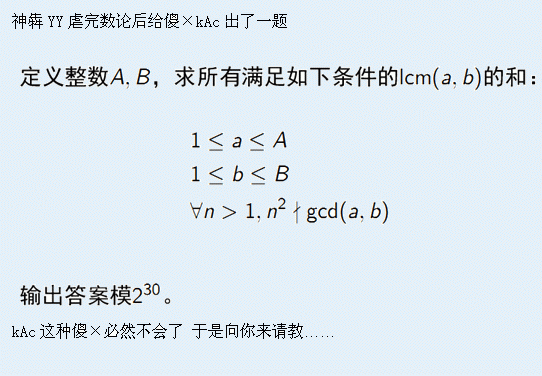

BZPRO
#2694. Lcm
内存限制：128 MiB
时间限制：10 Sec
提交
提交记录
讨论
题目描述

对于任意的>1的n gcd(a, b)不是n^2的倍数
也就是说gcd(a, b)没有一个因子的次数>=2
输入格式
一个正整数T表示数据组数
接下来T行 每行两个正整数 表示N、M
输出格式
T
行 每行一个整数 表示第i组数据的结果
样例
样例输入
4
2 4
3 3
6 5
8 3
样例输出
24
28
233
178
数据范围与提示
HINT
T <= 10000
N, M<=4000000